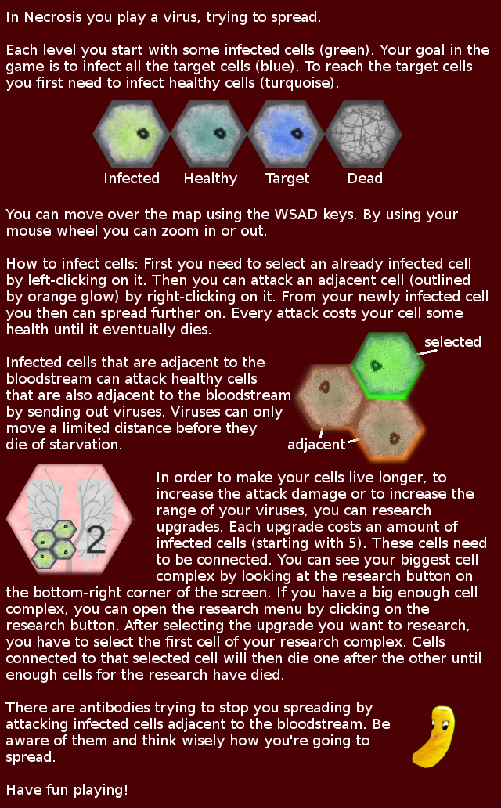

Controls:
W, S, A, D - scroll map
left mouse button - select infected cell
right mouse button - select target cell
mouse wheel - zoom
R - restart level
ESC - return to main menu
1, 2, 3, 4 - select virus